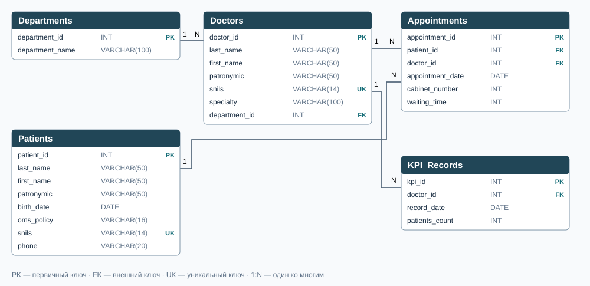

Сравнение подразделений
Агрегация по выбранной категории
Анализ времени ожидания и распределения приёмов
Агрегация по выбранной категории
Среднее время ожидания, мин
Пороговые значения из практической №2
Все показатели рассчитываются по текущей выборке
| Отделение | Приёмов | Среднее, мин | Мин., мин | Макс., мин | Критичных | Без данных |
|---|
Коэффициент Пирсона: от −1 до +1. Число наблюдений врача за дату рассчитано по всей базе, а не по фильтру.
Обезличенный ID пациента и фактическое время ожидания
| ID | Дата | Отделение | Врач | Пациент | Возраст | Кабинет | Ожидание | Категория |
|---|
Звёздочка (*) обозначает оценочное значение, заполненное медианой. Исходные записи в БД не изменяются.
Самостоятельный источник из практической №3: 669 записей о количестве пациентов за смену (исходные и дополнительные).
| Дата | Врач | Специальность | Пациентов за смену | Оценка нагрузки |
|---|
Норма 25, предупреждение от 30, критично от 35 пациентов — только для терапевтов. KPI отражает отдельные смены; число строк Appointments не равно числу пациентов за смену и не суммируется с KPI.
Учебная модель деятельности ГБУЗ «Городская поликлиника № 8 ДЗМ», филиал № 2. Задача — анализ времени ожидания приёма и нагрузки врачей для поддержки решений заведующего отделением и заместителя главного врача.
Источник: текущая практика №3 (MySQL) и расширенная выгрузка практики №4. Все данные учебные. Добавлено 95 приёмов и 15 пациентов в практике №4; в практике №5 добавлено 1 400 приёмов, 180 пациентов и 664 записи KPI. Всего 1 500 приёмов за 01.06–26.11.2026, 200 пациентов, 5 врачей, 3 отделения и 669 записей KPI.
Решение руководства может изменить расписание последующих приёмов. Приложение поддерживает шаг 4, не заменяя ЕМИАС.
Для публикации на GitHub Pages используется IndexedDB — локальная база в браузере. Пять объектных хранилищ соответствуют таблицам исходной MySQL. Первичные ключи задаются через keyPath, внешние ссылки индексируются, а их целостность проверяется программой при загрузке. Типы в таблицах ниже — исходные типы MySQL; в браузере INT → Number, VARCHAR и DATE → String, SQL NULL → null. Индексы SNILS уникальны. Браузер не подключается к серверу MySQL.

Скачать полную базу MySQL · Исходная схема MySQL · Расширенная выгрузка CSV
Параметры выборки, KPI, группировка, графики, матрица корреляций и рекомендации.
Просмотр исходных записей, поиск, сортировка, постраничный вывод и выгрузка CSV.
Независимая аналитика записей KPI, контроль нагрузки терапевтов за смену.
Описание бизнес-процесса, физическая модель, экранные формы, стек и хранилище.
HTML5, CSS3, JavaScript, IndexedDB API, SVG и CSV. Без сервера, платных сервисов и сторонних библиотек. При первом запуске создаётся БД clinic_analytics_v5_expanded, в неё загружаются записи из data/seed.js; далее данные читаются транзакцией IndexedDB.
Среднее ожидание — сумма известных минут / число измерений. По умолчанию два пропуска заменяются медианой расширенной базы (24 минуты), по тому же принципу, что в практике №4. При отключении этой обработки пропуски не включаются в расчёт среднего, но сами приёмы остаются в количестве. Критическая доля — число ожиданий от 30 минут / число известных или восстановленных измерений. Корреляция рассчитывается только для числовых показателей, не для идентификаторов.
Аналитика не является статистикой реальной поликлиники. Реестр приёмов представляет выборку наблюдений ожидания, а KPI — отдельный учёт смен. Полного расписания смен нет. Отсутствие записей не означает отсутствие работы.